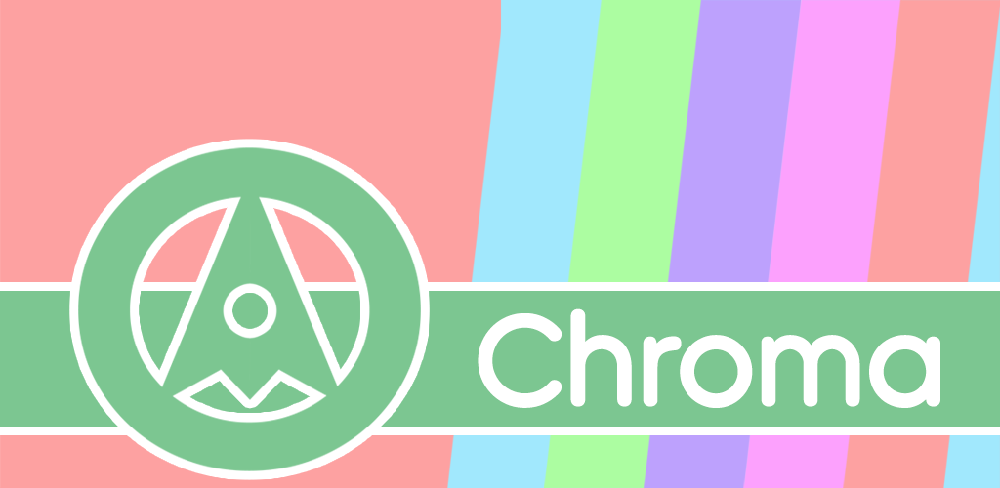

Chroma is available now!
Chroma is a colorful, quirky and fast-paced 2D action game in the style of bullet hell "danmaku" shooters featuring a cheery art style inspired by games like Katamari Damacy. Swiftly skirt, sidestep and strafe through a myriad of endless unique bullet patterns to survive!
DIFFICULTY: As you progress levels in each run, the game's difficulty increases making it accessible for both beginners and experts alike.
ACHIEVEMENTS: Test your skill by unlocking achievements in the game!
MUSIC: Listen to cute and colorful J-pop style themes while you play!
PATTERNS: Survive through 100+ unique bullet patterns!
>>Out now on Google Play Store
2
3